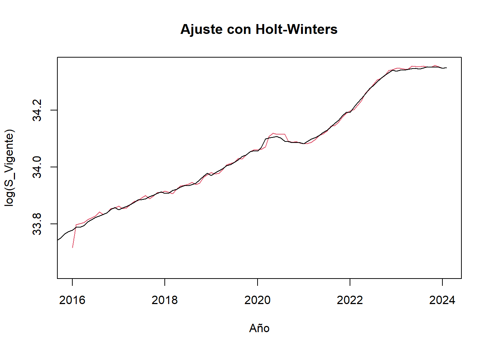
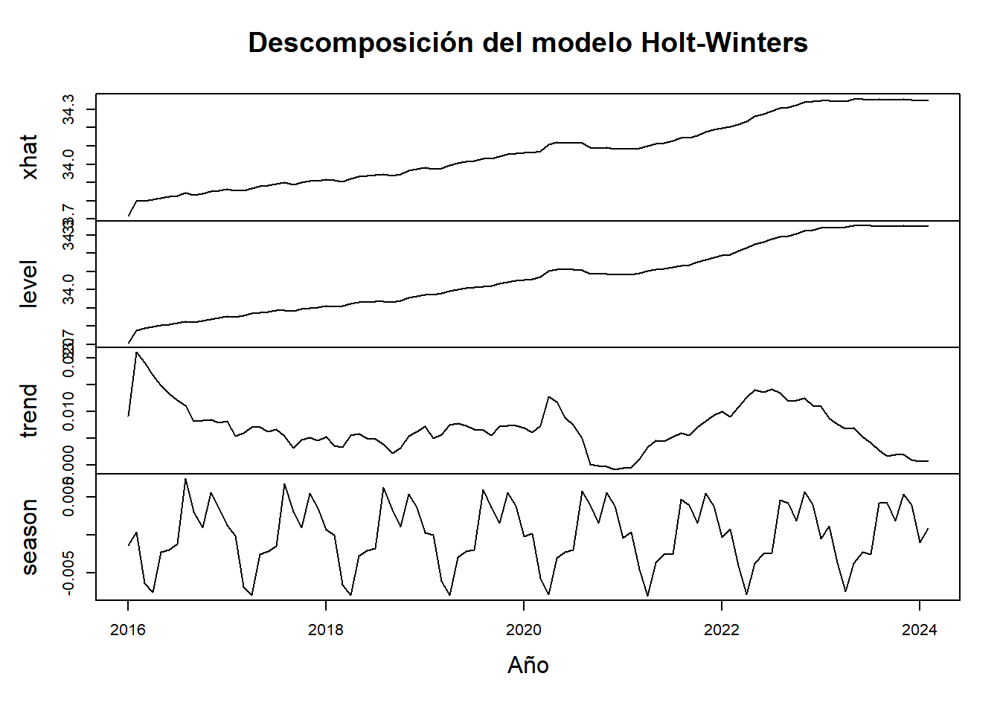
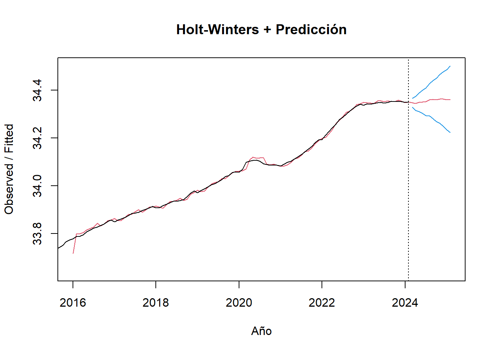

9 Modelo Holt-Winters
Este modelo permite estimar los parámetros B0, Bt y la caminata aleatoria que debe seguir el modelo para ser recursiva la estimación en el tiempo.
## Installing package into 'D:/Usuarios/dir.tic/AppData/Local/R/win-library/4.4'
## (as 'lib' is unspecified)## package 'TSA' successfully unpacked and MD5 sums checked
##
## The downloaded binary packages are in
## D:\Usuarios\dir.tic\AppData\Local\Temp\Rtmp2bzlob\downloaded_packages## Registered S3 methods overwritten by 'TSA':
## method from
## fitted.Arima forecast
## plot.Arima forecast##
## Adjuntando el paquete: 'TSA'## The following object is masked from 'package:readr':
##
## spec## The following objects are masked from 'package:stats':
##
## acf, arima## The following object is masked from 'package:utils':
##
## tardata_agrupada2 = ts(data_agrupada$Vigente, frequency = 12, start=c(2015,1))
modelo_HW = HoltWinters(log(data_agrupada2), seasonal = "additive")
plot(modelo_HW, main='Ajuste con Holt-Winters', xlab='Año', ylab='log(S_Vigente)')
El comando de Holt-Winters crea una gráfica en color rojo, con un comportamiento muy cercano a la serie original (línea negra), teniendo algunos valores alejados como en 2016-1 o el inicio de 2020, pero que apesar de esto el ajuste con el método es bueno para la serie de tiempo.
Para complementar el análisis del método realizamos el proceso de descomposición para la serie con el modelo aplicado:
plot(fitted(modelo_HW), main='Descomposición del modelo Holt-Winters', xlab='Año', ylab='log(Vigente)')
Luego de revisar la descomposición, podemos realizar una predicción con este modelo para los siguientes meses:
## fit upr lwr
## Mar 2024 34.34733 34.36608 34.32859
## Apr 2024 34.34458 34.37318 34.31599
## May 2024 34.34884 34.38698 34.31070
## Jun 2024 34.35131 34.39915 34.30347
## Jul 2024 34.35194 34.40979 34.29409
## Aug 2024 34.35967 34.42790 34.29143
## Sep 2024 34.36087 34.43988 34.28186
## Oct 2024 34.35937 34.44955 34.26919
## Nov 2024 34.36355 34.46530 34.26180
## Dec 2024 34.36317 34.47689 34.24946
## Jan 2025 34.35920 34.48527 34.23314
## Feb 2025 34.36196 34.50075 34.22316Podemos ver la predicción de un año en el cual los valores se rigen o siguen una tendencia de valores de los meses inmediatamente anteriores. Podemos graficar esta predicción así:
